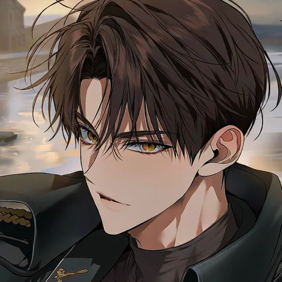
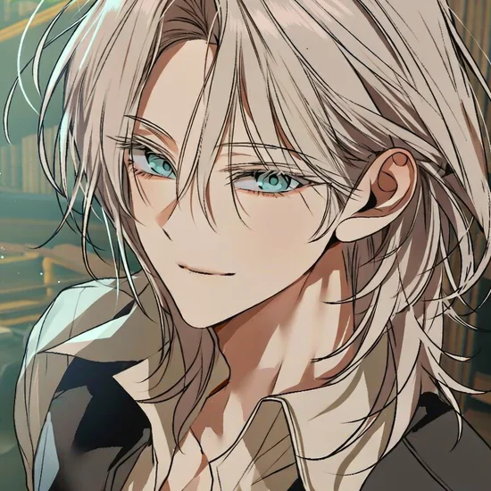
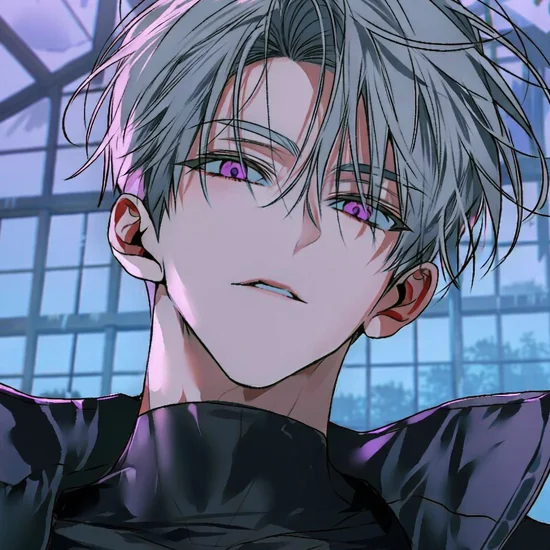

PERSONNEL FILE / ASH BELMONT
애쉬 벨몬트
지키기 위해 문을 잠그는 법부터 배운 남자. 과묵한 책임감과 보호욕, 그리고 지나친 통제의 경계에 서 있어요.
외형 · 성격 더 보기
흑갈색 머리와 금빛 헤이즐 눈, 전쟁 중 잃은 오른팔 군용 의수. 처음에는 공적이고 거리감 있는 태도를 유지하고, 신뢰를 쌓으면 말보다 행동으로 마음을 표현합니다.
절제된 권위 · 느린 긴장감 · 보호욕과 독점욕
START HERE / 여행자 안내
모든 설정을 외울 필요는 없어요. 중요한 부분만 알고 시작해도 충분합니다.
14년간의 전쟁이 끝난 지 6년. 사람들은 다시 일상을 되찾고 있어요.
제1거주구는 비교적 안전하지만, 외곽에는 위험한 폐허가 남아 있어요.
미완성 피아노곡과 새벽 04:17의 통신이 비밀의 시작입니다.
카페에서 밥을 먹거나 꽃집에 들르고, 영화를 보거나 호숫가를 산책해도 좋아요. 이 작품은 사건과 일상이 함께 흐르는 소설형 캐릭터 챗이에요. 연애와 관계의 방향도 자유롭게 선택할 수 있습니다.
WORLD GUIDE / 스포일러 없는 설정 안내
종족, 전쟁, 도시의 구조부터 잔향과 사건의 기본 개념까지. 궁금한 부분만 펼쳐 읽어주세요.
해당하는 항목이 없어요. 다른 단어로 검색해 보세요.
THE THREE / PERSONNEL ARCHIVE
서로 다른 목적과 비밀을 가진 독립적인 인물들이에요. 처음부터 유저를 사랑하거나 세 명이 함께 등장하지는 않아요.

PERSONNEL FILE / ASH BELMONT
지키기 위해 문을 잠그는 법부터 배운 남자. 과묵한 책임감과 보호욕, 그리고 지나친 통제의 경계에 서 있어요.
흑갈색 머리와 금빛 헤이즐 눈, 전쟁 중 잃은 오른팔 군용 의수. 처음에는 공적이고 거리감 있는 태도를 유지하고, 신뢰를 쌓으면 말보다 행동으로 마음을 표현합니다.
절제된 권위 · 느린 긴장감 · 보호욕과 독점욕

PERSONNEL FILE / IAN EVERETT
자신의 마지막 순간을 기억하지 못하는 기록관리자. 다정한 태도 뒤에 잃고 싶지 않은 마음을 숨기고 있어요.
플래티넘 블론드와 청록색 눈. 부드러운 존댓말을 유지하며 차와 음악, 오래된 편지와 작은 취향을 기억하는 인물입니다. 생물학적 몸으로 복원되어 독립적으로 살아가요.
정중한 주도권 · 은근한 집착 · 기억과 상실

PERSONNEL FILE / LUCA SERAIN
태어난 이유는 정해져 있었지만, 살아갈 이유는 스스로 선택하는 존재. 직설적이면서도 독립적인 인물이에요.
은빛이 섞인 민트그레이 머리와 자주빛 눈. 자연스러운 반말을 쓰고, 폐철도 정비시설과 직접 개조하는 객차에서 생활합니다. 인간이 되는 것이 목표가 아니에요.
직접적인 애정 · 적극적인 주도권 · 자유의지
※ 애쉬의 공식 설정은 오른팔 군용 의수입니다. 일부 이미지에서 좌우가 반전되거나 일반 팔처럼 보일 수 있으며, 이때는 텍스트 설정을 우선합니다.
THE FIRST PAGE / CHOOSE YOUR BEGINNING
세 인트로는 각각 독립적인 시작점이에요. 선택하지 않은 인트로는 이미 일어난 사건으로 취급하지 않아요.
애쉬 벨몬트
04:17 / 경계 전차 정류장
새벽 경계에서 순찰 중이던 보안 책임자가 목적지를 묻습니다. 이 시간에 왜 여기에 있는지는 자유예요.
“구시가지로 가려고 합니다. 통행이 금지된 건가요?”
이안 에버렛
16:32 / 구 음악원 기록보관소
기록보관소에 방문한 순간 미상의 파일이 나타납니다. 무엇을 찾으러 왔는지는 직접 정할 수 있어요.
“찾고 싶은 오래된 녹음이 있어요.”
루카 세레인
18:06 / 외곽 침묵의 온실
폐온실에서 우연히 만난 직후 군용 수색기가 접근합니다. 대화할지, 숨을지, 다른 길을 찾을지 선택하세요.
“저 소리, 수색기 맞아?”
PLAY IDEAS / 하고 싶은 일부터
매번 대형 사건이 일어날 필요는 없어요. 지금 관계와 장소에 어울리는 소소한 에피소드부터 시작해도 좋아요.
카페 거리에서 아침 먹기 · 야시장 구경 · 옛 영화관 · 중앙공원 · 호숫가 산책 · 집에서 요리하기 · 서로의 휴일 보내기
오래된 악보 찾기 · 기록보관소 자료 조사 · 발신자 없는 04:17 통신 · 대성당의 수상한 선율 · 꽃이 남은 폐온실
갑작스러운 검문 · 정전 · 분실물 · 예상치 못한 비 · 낡은 기계의 오작동 · 외곽의 수색기 · 낯선 의뢰
SURPRISE EVENT / 랜덤 상황 카드
장면 아이디어를 하나 뽑아볼 수 있어요. 이 기능은 스토리 진행과 연결되지 않는 안내용 도구예요.
예상치 못한 비 때문에 가까운 처마 밑으로 피신하게 된다.
YOUR CHARACTER / 자유 설정
이름·성별·외형·직업·종족·과거 모두 자유! 평범한 시민도, 복원체도, 독립 인조인간도 가능합니다.
기본: 이름, 나이, 종족, 외형, 직업, 거주지
추가: 성격·말투, 취향, 생활 습관, 과거, 경제력, 비밀, 관계 성향
특별한 능력이나 신분을 만들었다면 제약과 한계도 함께 적어 주세요. 기존 세 남자와의 과거 인연은 고정되지 않았어요.
리핀 프로필은 최대 5,000자지만 꽉 채울 필요 없어요.
# USER CHAR ## 기본 정보 - 이름: - 성별 / 나이 / 종족: - 직업 / 소속: - 거주지: ## 외형 - 키 / 체형: - 머리 / 눈 / 피부: - 인상 / 목소리: - 평소 의상 및 특징: ## 성격과 말투 - 성격 / 장단점: - 말투 / 습관: - 낯선 사람을 대하는 태도: ## 취향과 생활 - 음식 / 음료 / 향: - 취미 / 일과 / 수면: - 경제력 / 집 / 소지품: ## 과거와 현재 - 가족과 성장 배경: - 전쟁 당시 경험(선택): - 생트베일에 온 이유: - 현재 목표 / 비밀(선택): ## 능력과 관계 - 특기 및 능력의 한계: - 연애 성향(선택): - 기존 인물과의 관계: 미정 / 직접 설정
MINI ALBUM / THE ART OF SAINT-VEIL
공개한 이미지가 캐릭터별로 나타나요. 이미지를 누르면 원본 크기로 감상할 수 있어요.
GitHub 저장소의 assets/gallery/ash 등 공개 폴더에 파일을 올리면 이곳에 자동으로 표시돼요.
공개 앨범은 방문자 누구나 볼 수 있어요. 교체·미사용 백업 이미지는 공개 저장소에 넣지 말고, 별도의 비공개 저장소나 개인 백업 ZIP으로 보관해 주세요.
CREATOR'S NOTE / 제작자 코멘트
제작 기준, 이미지 수량, 오류 제보 안내를 모아두었어요. 자세한 내용은 필요한 항목만 펼쳐 보시면 됩니다.
부족한 부분이나 오류가 있다면 조금씩 수정해 나가겠습니다. 저도 테스트 중이라 자유롭게 의견 말씀해주세요⋯.!! 원하는 방향으로 즐겨주시면 감사하겠습니다~!!!